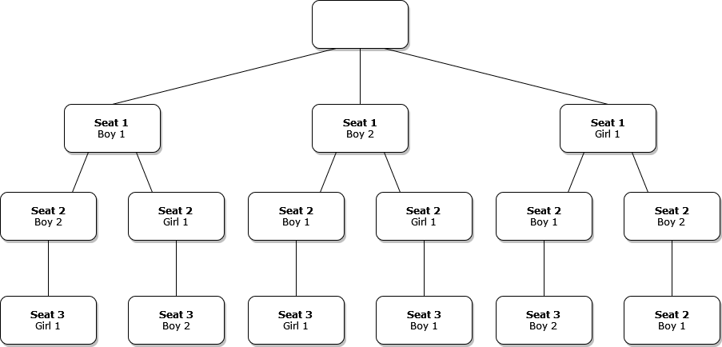
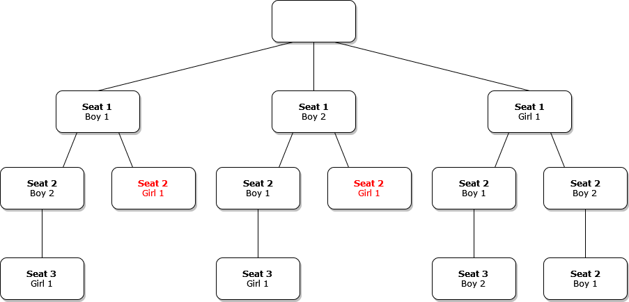

Notes on Backtracking Problems in Python
Overview
Here are some notes I took while watching Lynn Zheng’s video providing a walkthrough on solving backtracking problems.
Backtracking
- Goal: Finding valid states that satisfy a set of problem constraints
- Approach: Recursively try to satisfy all constraints by testing potential solutions, step by step, and undoing steps when there are no valid potential next steps
- Brute force approach
- Depth First Search
Backtracking Template
- Get initial state
- Check if state is valid
- Get list of valid potential next steps
- Try each potential step, depth first
- Backtrack one step when there are no potential next steps
- Could be from reaching a valid state or from choosing an invalid step
# Check if the current state is a valid soluion
def is_valid_state(state):
# check if is a valid solution
return True
# Get list of potential next steps
def get_candidates(state):
return []
# Recursively, perform a depth-first search to find valid solutions
def search(state, solutions):
# Check is the state is valid
if is_valid_state(state):
# Add a copy of the valid state to list of solutions
solutions.append(state.copy())
# return # uncomment if you only need to find one valid solution
# Iterate through the candidates that can be used
# to construct the next state
for candidate in get_candidates(state):
# Add candidate to the current state
state.add(candidate)
# Call search function with updated state
search(state, solutions)
# Remove the current candidate from the current state
state.remove(candidate)
# Entry point to the program
# responsible for returning the valid solutions
def solve():
# start with an empty list of solutions
solutions = []
# start with an empty state
state = set()
# initiate the recursive search
search(state, solutions)
# return the final list of solutions
return solutionsToy Example
- There are 3 students
- Boy 1
- Boy 2
- Girl 1
- There is 1 row containing three seats
- Constraints
- all seats must be filled
- a student can only sit in one seat at a time
- Find every possible seating arrangement
| Seat | 1 | 2 | 3 |
|---|---|---|---|
| 1 |
Possible Seating Arrangements

There are six possible arrangements
| Seat | 1 | 2 | 3 |
|---|---|---|---|
| 1 | Boy 1 | Boy 2 | Girl 1 |
| Seat | 1 | 2 | 3 |
|---|---|---|---|
| 1 | Boy 1 | Girl 1 | Boy 2 |
| Seat | 1 | 2 | 3 |
|---|---|---|---|
| 1 | Boy 2 | Boy 1 | Girl 1 |
| Seat | 1 | 2 | 3 |
|---|---|---|---|
| 1 | Boy 2 | Girl 1 | Boy 1 |
| Seat | 1 | 2 | 3 |
|---|---|---|---|
| 1 | Girl 1 | Boy 1 | Boy 2 |
| Seat | 1 | 2 | 3 |
|---|---|---|---|
| 1 | Girl 1 | Boy 2 | Boy 1 |
replit: https://replit.com/@innominate817/backtracking-toy-example#main.py
OPTIONS = {"B1", "B2", "G1"}
# Check if the current state is a valid soluion
def is_valid_state(state):
# The current state is valid is there is a unique student in each seat
return len(state) == 3
# Get list of potential next steps
def get_candidates(state):
# print(list(OPTIONS.difference(set(state))))
return list(OPTIONS.difference(set(state)))
# Recursively, perform a depth-first search to find valid solutions
def search(state, solutions):
# Check is the state is valid
if is_valid_state(state):
# Add a copy of the valid state to list of solutions
solutions.append(state.copy())
print(f"Valid State Found: {state}")
# return # uncomment if you only need to find one valid solution
# Iterate through the candidates that can be used
# to construct the next state
for candidate in get_candidates(state):
# Add candidate to the current state
state.append(candidate)
# Call search function with updated state
search(state, solutions)
# Remove the current candidate from the current state
print(f"backtracking from: {state}")
state.remove(candidate)
# Entry point to the program
# responsible for returning the valid solutions
def solve():
solutions = []
state = []
search(state, solutions)
return solutions
if __name__ == "__main__":
solutions = solve()
print(solutions)Valid State Found: ['G1', 'B2', 'B1']
backtracking from: ['G1', 'B2', 'B1']
backtracking from: ['G1', 'B2']
Valid State Found: ['G1', 'B1', 'B2']
backtracking from: ['G1', 'B1', 'B2']
backtracking from: ['G1', 'B1']
backtracking from: ['G1']
Valid State Found: ['B2', 'G1', 'B1']
backtracking from: ['B2', 'G1', 'B1']
backtracking from: ['B2', 'G1']
Valid State Found: ['B2', 'B1', 'G1']
backtracking from: ['B2', 'B1', 'G1']
backtracking from: ['B2', 'B1']
backtracking from: ['B2']
Valid State Found: ['B1', 'G1', 'B2']
backtracking from: ['B1', 'G1', 'B2']
backtracking from: ['B1', 'G1']
Valid State Found: ['B1', 'B2', 'G1']
backtracking from: ['B1', 'B2', 'G1']
backtracking from: ['B1', 'B2']
backtracking from: ['B1']
[
['G1', 'B2', 'B1'],
['G1', 'B1', 'B2'],
['B2', 'G1', 'B1'],
['B2', 'B1', 'G1'],
['B1', 'G1', 'B2'],
['B1', 'B2', 'G1']
]Additional Constraints
- The girl cannot sit in the middle (Seat 2)

replit: https://replit.com/@innominate817/backtracking-toy-example-1#main.py
OPTIONS = {"B1", "B2", "G1"}
# Check if the current state is a valid soluion
def is_valid_state(state):
# The current state is valid is there is a unique student in each seat
# and the girl is not in the middle seat
return len(state) == 3
# Get list of potential next steps
def get_candidates(state):
# Can only use students that are not already seated
# and the girl cannot be in the middle seat
if len(state) > 1 and state[1] == "G1": return []
return list(OPTIONS.difference(set(state)))
# Recursively, perform a depth-first search to find valid solutions
def search(state, solutions):
# Check is the state is valid
if is_valid_state(state):
# Add a copy of the valid state to list of solutions
solutions.append(state.copy())
print(f"Valid State Found: {state}")
# return # uncomment if you only need to find one valid solution
# Iterate through the candidates that can be used
# to construct the next state
for candidate in get_candidates(state):
# Add candidate to the current state
state.append(candidate)
# Call search function with updated state
search(state, solutions)
# Remove the current candidate from the current state
print(f"backtracking from: {state}")
state.remove(candidate)
# Entry point to the program
# responsible for returning the valid solutions
def solve():
solutions = []
state = []
search(state, solutions)
return solutions
if __name__ == "__main__":
solutions = solve()
print(solutions)Valid State Found: ['B1', 'B2', 'G1']
backtracking from: ['B1', 'B2', 'G1']
backtracking from: ['B1', 'B2']
backtracking from: ['B1', 'G1']
backtracking from: ['B1']
Valid State Found: ['B2', 'B1', 'G1']
backtracking from: ['B2', 'B1', 'G1']
backtracking from: ['B2', 'B1']
backtracking from: ['B2', 'G1']
backtracking from: ['B2']
Valid State Found: ['G1', 'B1', 'B2']
backtracking from: ['G1', 'B1', 'B2']
backtracking from: ['G1', 'B1']
Valid State Found: ['G1', 'B2', 'B1']
backtracking from: ['G1', 'B2', 'B1']
backtracking from: ['G1', 'B2']
backtracking from: ['G1']
[
['B1', 'B2', 'G1'],
['B2', 'B1', 'G1'],
['G1', 'B1', 'B2'],
['G1', 'B2', 'B1']
]Solve N-Queens
Arbitrary 4-Queens State
| Index | 0 | 1 | 2 | 3 |
|---|---|---|---|---|
| 0 | Queen | Queen | ||
| 1 | Queen | |||
| 2 | Queen | |||
| 3 |
Valid State
- The queens must be in positions where they cannot attack each other
- A queen can move horizontally, vertically, and diagonally
- No two queens can be on the same row, column, or diagonals
| Index | 0 | 1 | 2 | 3 |
|---|---|---|---|---|
| 0 | Queen | |||
| 1 | Queen | |||
| 2 | Queen | |||
| 3 | Queen |
Constructing Valid States
- Build up from previous states
- Start with blank board
- Place first queen arbitrarily
- This reduces the valid options for placing the second queen
- If a position is in the same row, column, or diagonal as the queen(s) on the board, it is removed from the list of valid options
- Arbitrarily pick from the remaining valid spots for the second queen
- This further reduces the valid spots for the third queen
- Arbitrarily place the third queen in one of the remaining valid spots
- Repeat for N queens
Leetcode Problem: N-Queens - LeetCode
- Could represent board as a 2D array
- Would be wasteful as no two queens can be on the same row or column
- Can keep a 1D list that tracks the queen position in each row
Example: [1, 3, 0, 2]
Index 0 1 2 3 0 Queen 1 Queen 2 Queen 3 Queen
replit: https://replit.com/@innominate817/backtracking-n-queens#main.py
import numpy as np
# Check if the current state is a valid soluion
def is_valid_state(state, num_queens):
# Confirm the target number of queens
# are on the board
return len(state) == num_queens
# Get list of potential next steps
def get_candidates(state, num_queens):
if not state: return range(num_queens)
# Get next index
position = len(state)
candidates = set(range(num_queens))
for row, col in enumerate(state):
# Remove column indices already occupied in previous rows
candidates.discard(col)
# Get the offset value for finding the column index in the
# next row that would be diagonal to the Queen
# in the current row index
dist = position - row
# Remove potential column indices that are diagonal
# to the current column index
candidates.discard(col + dist)
candidates.discard(col - dist)
return candidates
# Recursively, perform a depth-first search to find valid solutions
def search(state, solutions, num_queens):
# Check is the state is valid
if is_valid_state(state, num_queens):
# Add a copy of the valid state to list of solutions
solutions.append(state.copy())
print(f"Valid State Found: {state}")
# return # uncomment if you only need to find one valid solution
# Iterate through the candidates that can be used
# to construct the next state
for candidate in get_candidates(state, num_queens):
# Add candidate to the current state
state.append(candidate)
# Call search function with updated state
search(state, solutions, num_queens)
# Remove the current candidate from the current state
print(f"backtracking from: {state}")
state.remove(candidate)
# Entry point to the program
# responsible for returning the valid solutions
def solve(num_queens):
solutions = []
state = []
search(state, solutions, num_queens)
return solutions
if __name__ == "__main__":
num_queens = int(input("Enter number of queens: "))
solutions = solve(num_queens)
for solution in solutions:
board = np.full((num_queens, num_queens), "-")
for row, col in enumerate(solution):
board[row][col] = 'Q'
print(f'\nSolution: {solution}')
print(board)Enter number of queens: 4
backtracking from: [0, 2]
backtracking from: [0, 3, 1]
backtracking from: [0, 3]
backtracking from: [0]
Valid State Found: [1, 3, 0, 2]
backtracking from: [1, 3, 0, 2]
backtracking from: [1, 3, 0]
backtracking from: [1, 3]
backtracking from: [1]
Valid State Found: [2, 0, 3, 1]
backtracking from: [2, 0, 3, 1]
backtracking from: [2, 0, 3]
backtracking from: [2, 0]
backtracking from: [2]
backtracking from: [3, 0, 2]
backtracking from: [3, 0]
backtracking from: [3, 1]
backtracking from: [3]
Solution: [1, 3, 0, 2]
[['-' 'Q' '-' '-']
['-' '-' '-' 'Q']
['Q' '-' '-' '-']
['-' '-' 'Q' '-']]
Solution: [2, 0, 3, 1]
[['-' '-' 'Q' '-']
['Q' '-' '-' '-']
['-' '-' '-' 'Q']
['-' 'Q' '-' '-']]Solve Sudoku
LeetCode Problem: Sudoku Solver - LeetCode
Sample Board
| Index | 0 | 1 | 2 | 3 | 4 | 5 | 6 | 7 | 8 |
|---|---|---|---|---|---|---|---|---|---|
| 0 | 9 | 7 | 4 | 8 | |||||
| 1 | 7 | ||||||||
| 2 | 2 | 1 | 9 | ||||||
| 3 | 7 | 2 | 4 | ||||||
| 4 | 6 | 4 | 1 | 5 | 9 | ||||
| 5 | 9 | 8 | 3 | ||||||
| 6 | 8 | 3 | 2 | ||||||
| 7 | 5 | ||||||||
| 8 | 2 | 7 | 5 | 9 |
Solved Board
| Index | 0 | 1 | 2 | 3 | 4 | 5 | 6 | 7 | 8 |
|---|---|---|---|---|---|---|---|---|---|
| 0 | 5 | 1 | 9 | 7 | 4 | 8 | 6 | 3 | 2 |
| 1 | 7 | 8 | 3 | 6 | 5 | 2 | 4 | 1 | 9 |
| 2 | 4 | 2 | 6 | 1 | 3 | 9 | 8 | 7 | 5 |
| 3 | 3 | 5 | 7 | 9 | 8 | 6 | 2 | 4 | 1 |
| 4 | 2 | 6 | 4 | 3 | 1 | 7 | 5 | 9 | 8 |
| 5 | 1 | 9 | 8 | 5 | 2 | 4 | 3 | 6 | 7 |
| 6 | 9 | 7 | 5 | 8 | 6 | 3 | 1 | 2 | 4 |
| 7 | 8 | 3 | 2 | 4 | 9 | 1 | 7 | 5 | 6 |
| 8 | 6 | 4 | 1 | 2 | 7 | 5 | 9 | 8 | 3 |
replit: https://replit.com/@innominate817/backtracking-sudoku#main.py
import os
import numpy as np
from time import sleep
clear = lambda: os.system('clear')
# Get the cartesian product
from itertools import product
# Blank board
# BOARD = np.full((9,9), '.')
BOARD = np.array([
[".", ".", "9", "7", "4", "8", ".", ".", "."],
["7", ".", ".", ".", ".", ".", ".", ".", "."],
[".", "2", ".", "1", ".", "9", ".", ".", "."],
[".", ".", "7", ".", ".", ".", "2", "4", "."],
[".", "6", "4", ".", "1", ".", "5", "9", "."],
[".", "9", "8", ".", ".", ".", "3", ".", "."],
[".", ".", ".", "8", ".", "3", ".", "2", "."],
[".", ".", ".", ".", ".", ".", ".", ".", "6"],
[".", ".", ".", "2", "7", "5", "9", ".", "."],
])
# 9x9 board
SHAPE = 9
# 3x3 sub squares
GRID = 3
# Indicates board position is empty
EMPTY = '.'
# Digits 1-9 in string format
DIGITS = set([str(num) for num in range(1, SHAPE + 1)])
# Get the values in the kth row
def get_kth_row(board, k):
return board[k]
# Get the values in the kth column
def get_kth_col(board, k):
return [board[row][k] for row in range(SHAPE)]
# Get the sub square that contains the [row][col] index
def get_grid_at_row_col(board, row, col):
row = row // GRID * GRID
col = col // GRID * GRID
return [
board[r][c]
# Get every [row][col] index for the sub square
for r, c, in product(range(row, row + GRID), range(col, col + GRID))
]
# Get all rows
def get_rows(board):
for i in range(SHAPE):
yield board[i]
# Get all columns
def get_cols(board):
for col in range(SHAPE):
ret = [board[row][col] for row in range(SHAPE)]
yield ret
# Get all sub squares
def get_grids(board):
# Iterate over each row with a stride of GRID
for row in range(0, SHAPE, GRID):
# Iterate over each column with a stride of GRID
for col in range(0, SHAPE, GRID):
grid = [
board[r][c]
# Get every [row][col] index for the sub square
for r, c in product(range(row, row +
GRID), range(col, col + GRID))
]
yield grid
# Check if the current state is a valid soluion
def is_valid_state(state):
for row in get_rows(state):
if set(row) != DIGITS:
return False
for col in get_cols(state):
if set(col) != DIGITS:
return False
for grid in get_grids(state):
if set(grid) != DIGITS:
return False
return True
# Get list of potential next steps
def get_candidates(state, row, col):
# Keep track of digits already in the current
# row, column, or sub square
used_digits = set()
# Get digits already in current row
used_digits.update(get_kth_row(state, row))
# Get digits already in current column
used_digits.update(get_kth_col(state, col))
# Get digits already in current sub square
used_digits.update(get_grid_at_row_col(state, row, col))
# Only try digits not already in current row, column, and square
return DIGITS - used_digits
# Recursively, perform a depth-first search to find valid solutions
def search(state):
# Check is the state is valid
if is_valid_state(state):
# Ther is only one valid state
print(f"Valid State Found:\n{state}\n")
return True
for row_i, row in enumerate(state):
for col_i, val in enumerate(row):
# Only try values for empty spots
if val == EMPTY:
# Iterate through the candidates that can be used
# to construct the next state
for candidate in get_candidates(state, row_i, col_i):
# Add candidate to the current state
state[row_i][col_i] = candidate
# Call search function with updated state
if search(state):
return True
else:
# Uncomment to see process
# sleep(0.1)
# clear()
# print(f'Initial Board:\n{BOARD}\n')
# print(f"backtracking from:\n{state}\n")
# Remove the current candidate from the current state
state[row_i][col_i] = EMPTY
# None of the current candidates led to a valid state
return False
# No empty spots
return True
# Entry point to the program
# responsible for returning the valid solutions
def solve(board):
search(board)
if __name__ == "__main__":
print(f'Initial Board:\n{BOARD}\n')
solve(BOARD.copy())Initial Board:
[['.' '.' '9' '7' '4' '8' '.' '.' '.']
['7' '.' '.' '.' '.' '.' '.' '.' '.']
['.' '2' '.' '1' '.' '9' '.' '.' '.']
['.' '.' '7' '.' '.' '.' '2' '4' '.']
['.' '6' '4' '.' '1' '.' '5' '9' '.']
['.' '9' '8' '.' '.' '.' '3' '.' '.']
['.' '.' '.' '8' '.' '3' '.' '2' '.']
['.' '.' '.' '.' '.' '.' '.' '.' '6']
['.' '.' '.' '2' '7' '5' '9' '.' '.']]
Valid State Found:
[['5' '1' '9' '7' '4' '8' '6' '3' '2']
['7' '8' '3' '6' '5' '2' '4' '1' '9']
['4' '2' '6' '1' '3' '9' '8' '7' '5']
['3' '5' '7' '9' '8' '6' '2' '4' '1']
['2' '6' '4' '3' '1' '7' '5' '9' '8']
['1' '9' '8' '5' '2' '4' '3' '6' '7']
['9' '7' '5' '8' '6' '3' '1' '2' '4']
['8' '3' '2' '4' '9' '1' '7' '5' '6']
['6' '4' '1' '2' '7' '5' '9' '8' '3']]References:
- Solve Coding Interview Backtracking Problems - Crash Course
- [Algo] Backtracking Template & N-Queens Solution
- 6 Introduction to Backtracking - Brute Force Approach - Abdul Bari
I’m Christian Mills, a deep learning consultant specializing in practical AI implementations. I help clients leverage cutting-edge AI technologies to solve real-world problems.
Interested in working together? Fill out my Quick AI Project Assessment form or learn more about me.